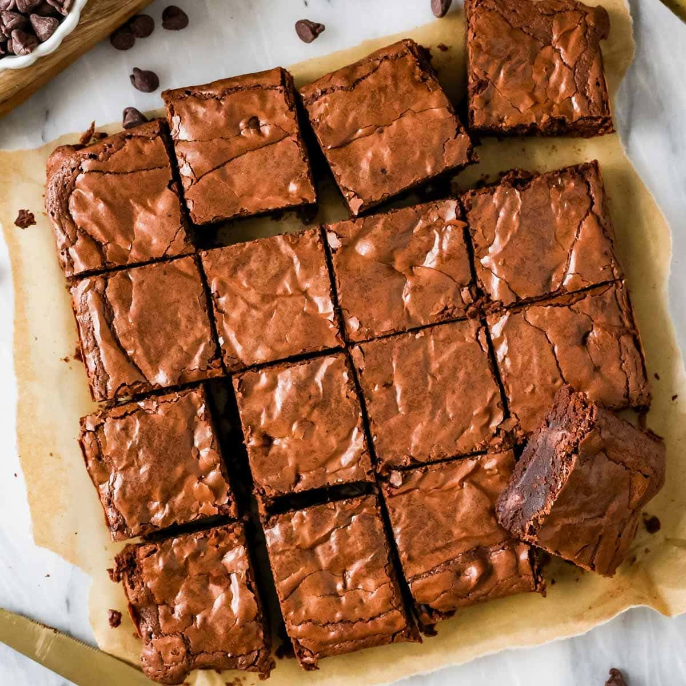

Back to home
Brownies

Description
A wonderful brownie!
fudgy brownies anytime with this pantry-staple, reliable recipe.
This recipe is a go-to for home bakers,
delivering rich, chocolatey brownies with a perfect balance of fudgy and cakey textures.
Home cooks rave about the dense, chewy texture of these brownies, calling it better than store-bought.
Ingredients
- 1 cup all-purpose flour
- 1/2 cup unsweetened cocoa powder
- 1/2 cup butter
- 3/4 cup granulated sugar
- 2 large eggs
- 1 teaspoon vanilla extract
- 1/2 teaspoon salt
- 1/2 teaspoon baking powder
Steps
- Preheat the oven to 350°F (175°C).
- In a large bowl, whisk together the flour and cocoa powder.
- In a separate bowl, cream the butter and sugar until light and fluffy.
- Beat in the eggs one at a time, then stir in the vanilla extract.
- Gradually add the dry ingredients to the wet ingredients, mixing until just combined.
- Pour the batter into a greased 8x8 inch baking pan.
- Bake for 25-30 minutes, or until a toothpick inserted into the center comes out clean .
Check out some of my other recipes!